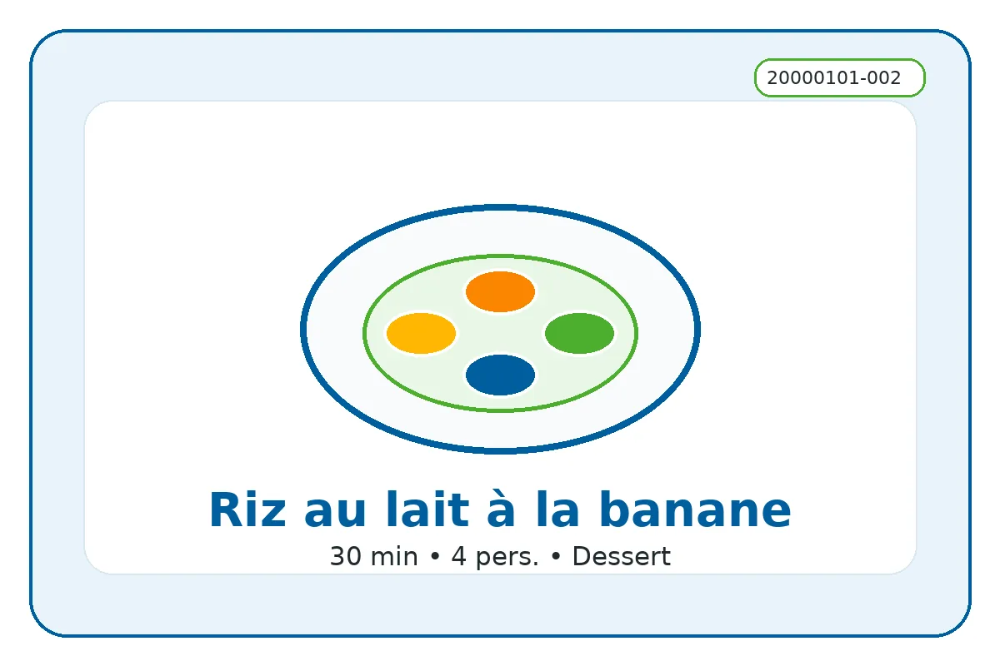

ID recette : 20000101-002
Riz au lait à la banane
Un riz au lait doux et anti-gaspi, enrichi avec de la banane bien mûre pour sucrer naturellement et obtenir une texture plus onctueuse.
La banane mûre apporte du parfum, de la douceur et permet de réduire le sucre ajouté. La cuisson lente du riz dans le lait donne un dessert simple, nourrissant et facile à préparer à l’avance.

🧭 Repères alimentaires
Repères indicatifs à vérifier selon les marques, les remplacements d’ingrédients et les produits réellement utilisés.
🔥 Cuisson indicative
Casserole : feu doux pendant 25 à 30 min, en remuant régulièrement.
Ces valeurs sont indicatives : ajuster selon le four, l’épaisseur du plat et la coloration souhaitée.
⚖️ Adapter les quantités
Le calcul adapte les quantités proportionnellement. Les valeurs nutritionnelles restent calculées sur les quantités de base.
🧺 Ingrédients avec quantités
Principaux
- 120 g — riz rond ou riz classique
- 800 ml — lait
- 2 pièces — bananes très mûres
Secondaires
- 40 g — sucre
- 1 pincée — sel
Optionnels
- 1 pincée — cannelle
- 1 c. à café — vanille
- 30 g — chocolat râpé
👩🍳 Préparation détaillée
- Rincer rapidement le riz rond. Porter le lait à frémissement dans une casserole avec le sucre, la vanille et une pincée de sel si disponible.
- Ajouter le riz et cuire à feu doux 25 à 30 minutes en remuant régulièrement pour éviter que le fond accroche.
- Écraser une banane bien mûre à la fourchette. L’ajouter en fin de cuisson, puis mélanger encore 2 à 3 minutes.
- Couper la seconde banane en rondelles ou l’écraser selon la texture souhaitée.
- Servir tiède ou froid. Ajouter cannelle, cacao ou miel si disponible.
💡 Astuce anti-gaspi
Utiliser des bananes très mûres, même tachées : elles remplacent une partie du sucre et donnent plus de goût.
🔁 Variantes possibles
Ajouter chocolat râpé, cannelle, vanille, raisins secs, zeste de citron ou un filet de miel. Pour une texture très crémeuse, utiliser du lait entier ou ajouter une petite cuillère de crème en fin de cuisson.
🔎 Rechercher cette recette sur Google
🔗 Sources d’inspiration
Liens utilisés pour comparer les techniques, les variantes et les temps de préparation. La fiche reste reformulée et adaptée au projet.
📊 Valeurs nutritionnelles estimées
Estimation indicative. Les valeurs ci-dessous sont calculées à partir d’ingrédients génériques et des quantités de base. Elles ne remplacent pas les étiquettes des produits, ni un avis médical ou diététique. Voir l’explication complète.
Non officiel
| Valeur | Par portion | Pour 100 g |
|---|---|---|
| Énergie | 1400 kJ / 334.7 kcal | 453 kJ / 108.2 kcal |
| Protéines | 9.8 g | 3.2 g |
| Glucides | 58.9 g | 19.0 g |
| dont sucres | 30.4 g | 9.8 g |
| Lipides | 6.2 g | 2.0 g |
| dont acides gras saturés | 3.7 g | 1.2 g |
| Fibres | 2.6 g | 0.8 g |
| Sel | 0.5 g | 0.1 g |
Portion estimée : 309 g. Score simplifié : 3. Indicateur estimé non officiel. Il ne correspond pas à un calcul réglementaire ni à un Nutri-Score officiel.
⚠️ Allergènes et conservation
Allergènes : Lait
Conservation : À conserver 24 h au réfrigérateur dans une boîte fermée.
Réchauffage : À réchauffer doucement si nécessaire.
Vérifiez toujours les étiquettes des produits utilisés.
🔎 Filtres associés
Cliquez sur un bouton pour trouver les recettes associées au même champ.
Sous-catégorie : Dessert lacté
Moment du repas : Dessert Gouter
Équipement : Casserole
Allergènes : Lait
Repères alimentaires : Sans porc Végétarien Contient lait Sans viande
📱 QR code
QR code vers la fiche en ligne.
https://recettesducoeur.github.io/recettes/20000101-002.html
Sur mobile/tablette, seul le téléchargement PDF est proposé. Sur PC, l’impression conserve les quantités sélectionnées.